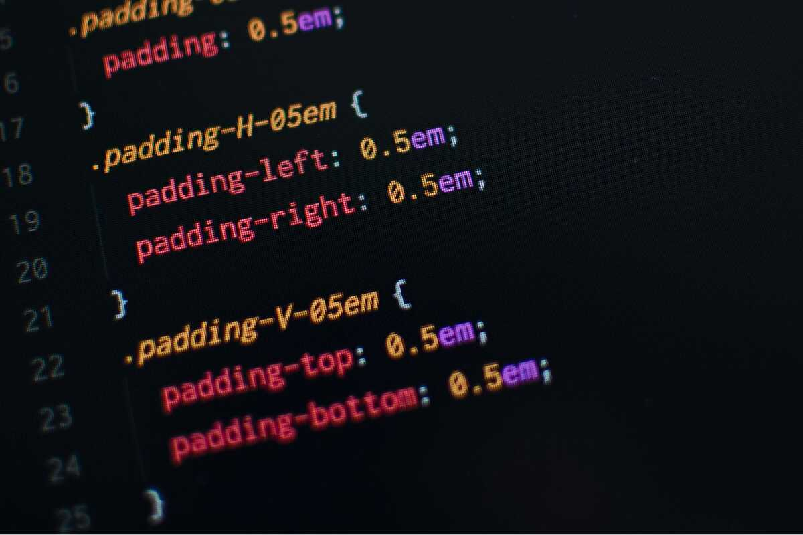

Ayuda a entender que hace cada clase o regla, lo que facilita encontrar y modificar estilos sin romper otros componentes
Cuando el CSS está bien organizado, varios desarrolladores pueden trabajar al mismo tiempo sin perderse
Se pueden seguir convenciones claras y comunes por ejemplo, BEM o metodologías como ITCSS, SMACSS.
Cuando el código está bien estructurado, es más fácil rastrear por qué un estilo no se aplica o se sobreescribe, también reduce los famosos "por qué esto se rompió ahora si no lo toqué".
